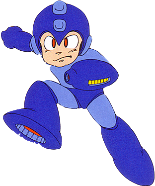

This is the main walkthrough section of the website. You can play through the levels in the order suggested in the table of contents below; there will be buttons at the bottom of each section to take you to the next and previous parts. Alternatively, you can click on one of the levels in the table if you need help with a specific level.
Table of Contents
I) Wily's Fortress 2
Reaching The Boss (I)
Save the Fire Storm for this stage's boss (you shouldn't need to use it until then for anything). In this level, we'll start on a red and green ledge in a high outside area. As I mentioned in Wily 1, your weapon energy now carries over between levels, so your weapon bars will currently look the same as they did when you finished the previous stage. Head right from this large starting ledge, staying cautious of the good ol' Bunby Helis that will be whizzing your way. After jumping over two ledges there'll be a smaller ledge that you can drop down to get a small health pickup (make sure the enemies are gone first). Get it and jump back up, continuing to head right until you get to a small corridor until a spiked roof. As you move into it, you'll see two small weapon refills which can be handy, but there's an invisible pit you'll need to jump over; the pit is roughly in the middle of the corridor. If you fell for the trap, boo hoo, but we have to head down here anyway, to find an old adversary...
Rematch: Cut Man
We actually have a boss fight in the middle of a level for once, and it's one of the robot masters you've defeated before, Cut Man. This fight is the very first example of what would become a major trope in the series from here: the Wily stages having you refight robot masters that you've beaten already. Normally, there's a room with transporters that take you to the robot masters in the order you choose, but in this first game it's more linear. Anyway, as you'll recall, Cut Man's weakness is the Super Arm... but there are no blocks to throw this time, meaning we can no longer just beat him in two hits. Instead, use the Mega Buster to shoot him and try to stay far away to avoid his cutter. He does stumble backwards a little bit when you hit him which hopefully will keep him away, but overall I'd say this fight is a fair bit harder now.
Like I said, the best method would be to try to stay at the opposite side of the room, mash the shoot button to keep firing at him and time your jumps over his cutter (remember it goes back like a boomerang). Being further away gives you more space and time to dodge well, and he should stay far away as he keeps getting shot at.
Reaching The Boss (II)
After the rematch, drop down another invisible pit to the very left to fall to another outside area like before. Start jumping over the gaps to the right again. Under the next ledge is a Screwdriver; stand above it just to the left so as not to get hit by one of its 5 beams. If you want to get rid of it and grab the health next to it, you'll want to equip the Thunder Beam and shoot just above it, as one of the electric shots will fire straight downwards. Continue heading right and jumping over to each ledge, using the Thunder Beam to take out one more Screwdriver to make things easier, and you'll reach another corridor just like a moment ago. This time the gap is just to the left of the two weapon refills, so jump over to them (use them to get a Thunder Beam refund? The Magnet Beam is probably quite low too). Drop down the pit for another (much easier) rematch.
Rematch: Elec Man
I'm not even sure if this deserves its own section; all you need to do is hit him three times with the Super Cutter. If you want more info, look at his boss fight in the Elec Man part of this walkthrough but that's really it. Defeat him then move on.
Reaching The Boss (III)
Fall down a pit at the very left again to reach... yeah. This is starting to feel a bit repetitive. As you head right here you'll need to dodge Bombombombs that emerge from the gaps between platforms, like with Bomb Man's stage. Despite how hard these Wily stages are I do like how they bring back elements of the past areas of the game. It's always cool when the final area of a game does that. It's a bit harder to dodge them here though but use a similar technique as before, by moving left to dodge the shrapnel then quickly right so you don't get hit by debris from the one behind you. There'll be two small ledges with weapon refills on the way, so get them if you'd like. We still need the Thunder Beam for some stuff before the boss (well, not need, but it'll make things more convenient). Go down at the very right again once you get to the rightmost ledge. At least Wily has courtesy enough to leave us a ladder instead of an invisible pit this time.
Here, you'll see some blue Adhering Suzies. Your goal is to keep heading downwards, using the ladder you see at the bottom right. I would recommend using the Thunder Beam as if you stand in the right place you can get rid of these enemies in one or two shots. The Mega Buster can be used for one at the left here though; get rid of it and then use a Magnet beam platform to reach a 1-up that you'll probably need. Get rid of the two others that are blocking your way down and then take the tiny ladder (it's got two rungs on it) down to the next screen.
Stay away from the spikes as even touching them gently from the side will kill you instantly. It's ridiculous. Fire the Thunder Beam at the perfect time to get rid of all 3 Suzies at once (a strange sentence to be sure) and head down the next ladder. Here, you'll drop down to the bottom area, so fire a beam left straight away to ensure no Suzies hit you in the face. The top one will probably be left alive but it's too high to hurt you on the ground so ignore it and take another two-rung ladder down. You'll fall to the bottom once more. Here, stand just to the left under the four Blasters on the right wall and shoot one thunder beam to take them all out at once... so very satisfying, and if you're lucky they'll drop something nice. Even if they don't, you can use the long ladder (longer than two rungs...) to the left to reach a large weapon refill. You should use it for your Fire Storm if that isn't full, but it should be since there's been no point so far in the fortress where we've had to use it. If Fire Storm is full, just use it for the weapon that's lowest at the moment. Take the rightmost ladder down to the last screen before the boss.
Ready a thunder shot and drop down when the space below is clear, then shoot left to clear the two Suzies. Drop down to the area with the Suzy and lone Blaster, and get rid of them. When the coast is clear and you're safe to move on, drop down at the gap to the right. Equip Fire Storm, then take the bottom-left ladder down to reach the boss.
Boss Fight: Copy Robot
As you drop into the boss room (which has a trippy background with lots of vividly coloured tiles), a device that looks like a teleporter will copy Mega Man's data and transfer it to another identical device. The device on the right will then produce... a clone of Mega Man! Yes, it's time to fight none other than yourself. In fact, make sure you keep an eye on Mega Man and don't get mixed up with the Copy Robot, because it's actually easy to lose track of who you're controlling here. The fake Mega Man will use the same ability that you have equipped at the moment and will adapt whenever you change your weapon, making the two of you equally matched at all times. Despite this, his weakness is the Fire Storm as he will jump around a lot as you shoot your weapon, and since the fire gives you a temporary shield, he'll often jump into it, causing damage to himself.
Keep aiming at him with the fire shots and try to keep him in the corner of the room; if you keep shooting in a pattern of good timing, you can prevent him from getting too close (and even if he does get close, the shield will hurt him). Keep an eye on your health bar. If you run out of fire energy, I'd say the next best thing is the Thunder Beam, but you might not want to do that if he still has a lot of health left as he will reciprocate with the same electric attacks and you should know how badly they can damage you from when you fought Elec Man. If you die, hopefully you'll have an extra life as you start from the room just above the boss and this will be a lot easier with full health.
When you get rid of your copycat, congratulate yourself. That was a hard fight. Onto the next level!